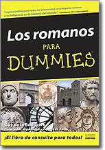

Los romanos para Dummies
Reseña por Jorge I. Zuluaga

Ver reseña en GoodReads (necesita cuenta)
Así lo pensaba yo al principio (muy a pesar de tener más 7 de estos libros sin leer en mi casa).
Para mí esta opinión cambio, justamente después de leer "Los romanos para Dummies".
Ya había empezado un par de libros para Dummies, pero sin mucha disciplina (Historia para Dummies, Gatos para Dummies, Música Clásica para Dummies, Mitos para Dummies - que si términe con mucha dificultad).
Con "Los romanos para Dummies" me decidí sin embargo a abordarlo como un reto. Leerlo de pasta a pasta como leería cualquier obra divulgativa.
Descubrí una obra sencilla, bien escrita y organizada de una forma atractiva y realmente poco trivial (como sentí que lo estaban los otros libros para Dummies que había comenzado).
El libro es un viaje al mundo de los romanos, su vida cotidiana, su religión, el ejercito, los gobernantes, sus conquistas. 1200 años de historia empaquetados en 489 páginas y organizados de modo que nunca te aburras.
El autor y la calidad de la información no puede ser mejor, de modo que el contenido esta asegurado.
Es cierto que hay listas en medio del libro imposibles de leer con algún placer, o saltos imprevistos de temas aparentemente inconexos. Pero cualquier libro de supuestamente mayor calidad literaria, tiene sus puntos bajos, páginas o capítulos enteros que podrías sugerir eliminar de ediciones posteriores. Por qué no iba a tenerlos un "libro para dummies".
A propósito: ¡nada de para dummies!. Este es un libro para Roma amans, apasionados de la civilización antigua mejor conocida y más influyente de la historia de occidente. Creo que sus páginas entretendrán por igual a quiénes nos iniciamos en el mundo de los romanos, como a aquellos que estén más curtidos en la historia de Roma y sus vecinos. Estos últimos encontraran seguramente en "Los romanos para Dummies", por lo menos, un buen libro de referencia.
Algunos datos asombrosos que descubrí en el libro y que pueden servir como acicate para que también ustedes le "hinquen el diente":
¿Sabían que la idea de una "unión europea" nació precisamente en Roma o mejor, que Roma fue el antepasado lejano de esta admirada organización supranacional?
¿Sabían que una legión romana estaba formada por 5120 soldados o legionarios, y que en el momento de mayor gloria militar Roma llego a tener más de 12 legiones repartidas por todo el imperio? (un ejercito que podría llenar perfectamente algunas de las ciudades más pobladas de la antigüedad).
¿Sabían que Roma, con su sistema de acueductos y cloacas, fue posiblemente una de las ciudades populosas más higiénicas de la antigüedad, incluso del medioevo europeo?
¿Sabían que la capacidad del "Anfiteatro flavio" (o coliseo como se lo vino a llamar después) lo pone entre los 20 estadios más grandes de Europa (incluso en pleno siglo XXI)?
¿Sabían que la fiesta de navidad hunde sus orígenes realmente en las Saturnalia (o Saturnales) que comenzaban el 17 de diciembre y se extendían hasta los días posteriores al solsticio de invierno (24-25 de diciembre en el alto medioevo), la gente encendía velas, se daban regalos y habían grandes parrandas?
¿Sabían que la idea de la santísima trinidad posiblemente se origina en el culto a las parcas o a las diosas madres romanas que se adoraban siempre por triplicado? o ¿sabían que los "mamertos" fueron realmente el nombre de un pueblo de mercenarios latinos que adoraban a Marte?
¿Sabían que "Cartagena" o "Cartago Novo" era el nombre en Latín de una ciudad que fundó el general Cartaginés Amilcar Barca (padre del famoso Aníbal) en la península ibérica con el fin de favorecer la invasión de Europa por ese ambicioso reino competidor de Roma?
¿Sabían que antes de las montañas de América, la fuente de los metales preciosos de Europa occidental (incluyendo naturalmente del Imperio Romano) fueron las montañas de España?
¿Sabían que mecenas antes de ser un sustantivo que denota a una persona que apoya a otros, era el cognomen de Cayo Clinius Mecenas, amigo personal y consejero del emperador Augusto, que fue patrono durante el reinado de aquel de poetas y escritores como Virgilio y Horacio? o ¿sabían que todas las figuras de Augusto lo representan como un hombre joven, ningún "retrato" de él conserva su imagen cuando fue viejo?
¿Sabían que Vespasiano, el noveno emperador, que inició la construcción del "anfiteatro flavio" en realidad fue el primero en llevar el título de Imperator? o ¿sabían que los hombres romanos se afeitaban "religiosamente" y consideraban la barba una característica propia de extranjeros como los griegos y que el primer emperador en lucir barba fue el culto (pero también contradictorio) Adriano?
Romanus sum.
Lean "Los romanos para dummies".